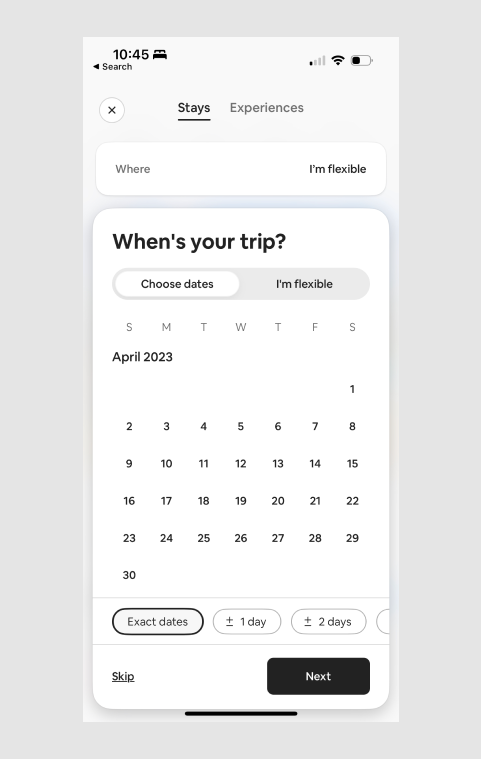
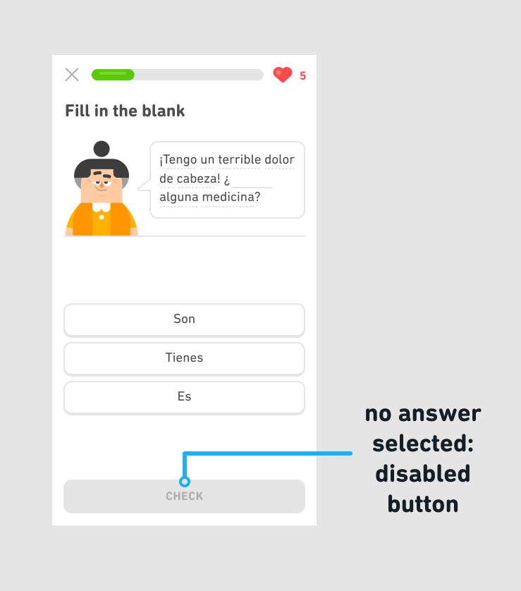
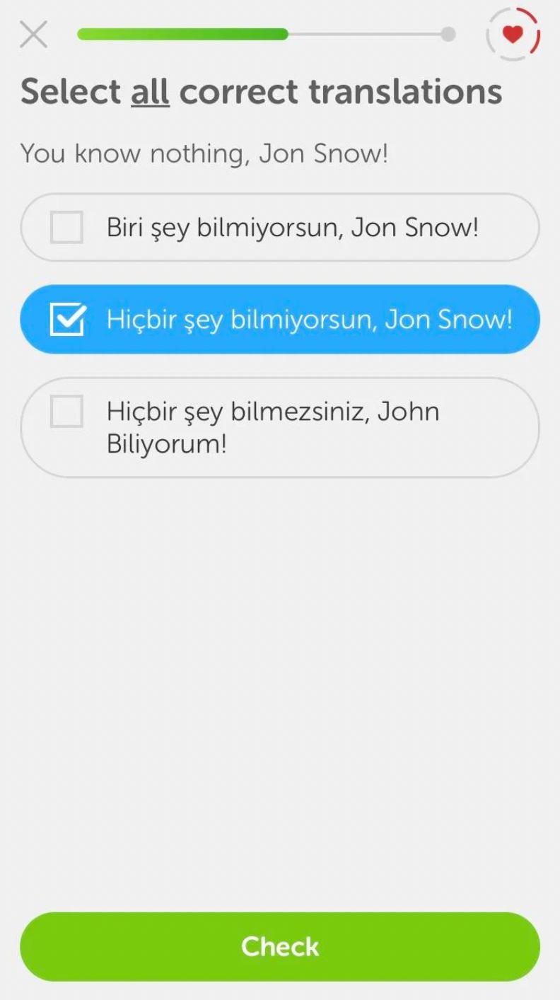

One way that designers can prevent user errors is by making it difficult or impossible for users to make mistakes in the first place. For example, Airbnb requires users to choose a trip dates, and designers chose to use a calendar picker instead of text field input. This way, users won't be able to enter an invalid date, which could result in a cumbersome user experience. By using a calendar picker, the designer is preventing user error before it happens.  Duolingo lessons also use force functions to prevent slips. For example, we know that learners are prone to accidentally double-tapping the continue button when doing a lesson. To prevent them from submitting empty responses, after the learner taps the continue button in the grading ribbon, we immediately disable it and only re-enable it once the learner has started their response. This way, users won't accidentally skip an exercise.  Duolingo used to have an exercise that asked users to "select all correct translations." However, many learners wouldn't read the instructions and would only select one translation. We attempted to solve this problem by underlining the word "all" in the instructions, hoping this would make it more clear to users. Unfortunately, A/B testing revealed that this change didn't help. Because we couldn't find a force function to prevent user error, we ended up discontinuing the exercise altogether. 
CONTINUE BACK